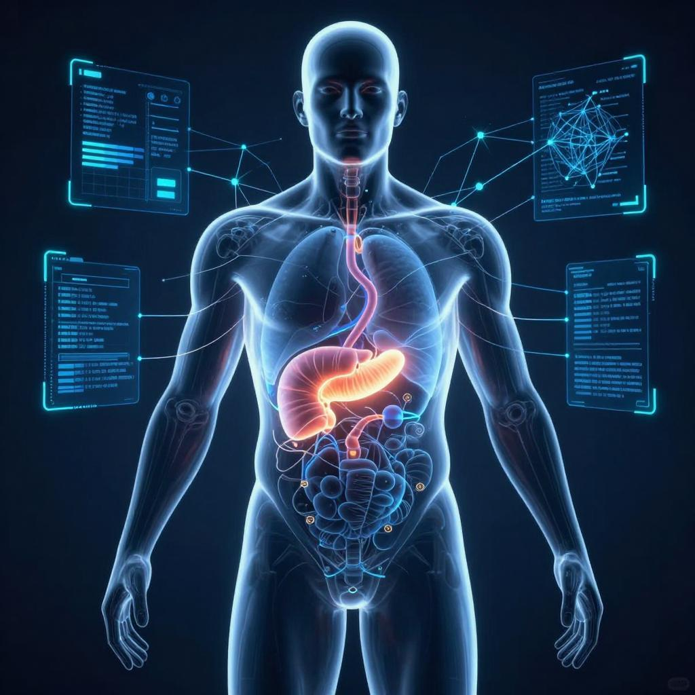

仲智數位健康股份有限公司（PanCAD.ai）將國立台灣大學王偉仲教授團隊的先進 AI 技術，與台大醫院廖偉智教授團隊的臨床驗證，轉化為守護國人胰臟健康的醫療器材。
胰臟癌是國人十大癌症死因之一，多數患者確診時已是晚期。我們相信，AI 可以在腫瘤還小的時候，就為醫師與患者爭取時間。
從台大實驗室的研究成果，到通過 TFDA 與 FDA 認證的醫療器材，我們走過完整的商品化道路 — 讓先進技術真正走進臨床，守護每一個人。
PANCREASaver® 的技術源自國立台灣大學，由王偉仲教授團隊開發核心 AI 演算法，並經台大醫院廖偉智教授團隊完成臨床驗證。
這是一條從實驗室到病房的完整道路 — 每一步都有嚴謹的科學與臨床證據支撐。
Clinical Evidence
我們響應「健康台灣」政策三大核心精神，以成熟的 AI 產品與完整的導入規格，協助醫療機構即刻落地智慧醫療。
AI 影像 Copilot 自動預篩，大幅減少閱片時間。
臨床驗證的成熟產品，無縫介接 PACS。
數位化 AI 預篩，優化早期癌篩流程。